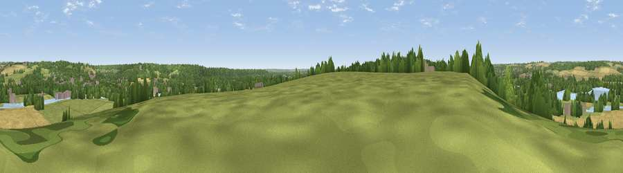

Viewpoint near Bourne End
#39426 in England · top 32% of its area beats it · near Bourne End · path 162 mWhere it is
The exact computed spot (SU 88375 86575). Click the marker for map links.
Public access: the nearest public right of way is about 162 m away — the final stretch may cross private land. Computed from Natural England's CRoW access layer and OpenStreetMap rights of way — not the legal definitive map. Always verify locally.
The view, rendered

A 360° render of this exact spot computed from the terrain model, tree cover and land cover — summer colours, afternoon light, calibrated against photographs of famous viewpoints. Real trees, hedges and buildings will differ in detail.
The panorama
Grey silhouette: terrain skyline in each direction (720 bearings, Earth curvature and refraction included). Dashed green: skyline with trees (+15 m) and buildings (+8 m) as obstacles. Blue strip: how far the ground is visible on each bearing.
Where the view opens
Wedge length = distance to the farthest visible ground on that bearing (vegetation-aware). Rings at 10, 25 and 50 km.
What fills the view
35% grassland · 27% woodland · 24% cropland · 7% built-up · 6% water
Angular shares of the visible panorama (visual magnitude), not map area. Landscape diversity 0.62 (0–1 Shannon).
Key numbers
More beautiful places nearby
The staircase of upgrades: each row has a higher view potential than everything closer. Driving times are estimates from straight-line distance, calibrated against real road routing — check an actual route before setting out.
| Place | Direction | Drive | Score |
|---|---|---|---|
| Viewpoint near Hedsor | E · 2 km | ~6 min | 31.3 |
| Viewpoint near Cookham Dean | SW · 3 km | ~6 min | 32.0 |
| Fultness Wood Hill | SW · 3 km | ~8 min | 39.0 |
| Windsor Castle | SE · 13 km | ~24 min | 39.8 |
| Viewpoint near Fawley | W · 14 km | ~26 min | 48.8 |
| Viewpoint near Whiteleaf | NNW · 18 km | ~31 min | 58.2 |
| Viewpoint near Chinnor | NW · 18 km | ~31 min | 67.9 |
| Viewpoint near Kingston Blount | NW · 18 km | ~31 min | 70.1 |
51.57113, -0.72624 · source: screening · position refined by local search. Computed location — check access rights before visiting.